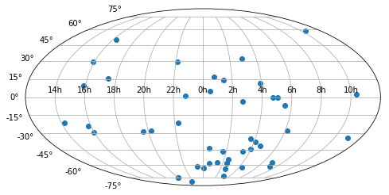

Adrian Price-Whelan, Kelle Cruz
astropy.ioastropy.coordinates (hours to degrees)matplotlibfile input/output, coordinates, units, matplotlib
This tutorial demonstrates the use of astropy.io.ascii for reading
ASCII data, astropy.coordinates and astropy.units for converting
RA (as a sexagesimal angle) to decimal degrees, and matplotlib for
making a color-magnitude diagram and on-sky locations in a Mollweide
projection.
In[1]:
import numpy as np
# Set up matplotlib
import matplotlib.pyplot as plt
%matplotlib inline
Astropy provides functionality for reading in and manipulating tabular
data through the astropy.table subpackage. An additional set of
tools for reading and writing ASCII data are provided with the
astropy.io.ascii subpackage, but fundamentally use the classes and
methods implemented in astropy.table.
We’ll start by importing the ascii subpackage:
In[2]:
from astropy.io import ascii
For many cases, it is sufficient to use the ascii.read('filename')
function as a black box for reading data from table-formatted text
files. By default, this function will try to figure out how your data is
formatted/delimited (by default, guess=True). For example, if your
data are:
# name,ra,dec
BLG100,17:51:00.0,-29:59:48
BLG101,17:53:40.2,-29:49:52
BLG102,17:56:20.2,-29:30:51
BLG103,17:56:20.2,-30:06:22
...
(see simple_table.csv)
ascii.read() will return a Table object:
In[3]:
tbl = ascii.read("simple_table.csv")
tbl
Out[3]:
Table length=4| name | ra | dec |
|---|---|---|
| str6 | str10 | str9 |
| BLG100 | 17:51:00.0 | -29:59:48 |
| BLG101 | 17:53:40.2 | -29:49:52 |
| BLG102 | 17:56:20.2 | -29:30:51 |
| BLG103 | 17:56:20.2 | -30:06:22 |
The header names are automatically parsed from the top of the file, and the delimiter is inferred from the rest of the file – awesome! We can access the columns directly from their names as ‘keys’ of the table object:
In[4]:
tbl["ra"]
Out[4]:
<Column name='ra' dtype='str10' length=4>| 17:51:00.0 |
| 17:53:40.2 |
| 17:56:20.2 |
| 17:56:20.2 |
If we want to then convert the first RA (as a sexagesimal angle) to
decimal degrees, for example, we can pluck out the first (0th) item in
the column and use the coordinates subpackage to parse the string:
In[5]:
import astropy.coordinates as coord
import astropy.units as u
first_row = tbl[0] # get the first (0th) row
ra = coord.Angle(first_row["ra"], unit=u.hour) # create an Angle object
ra.degree # convert to degrees
Out[5]:
267.75
Now let’s look at a case where this breaks, and we have to specify some
more options to the read() function. Our data may look a bit
messier:
::
,,,,2MASS Photometry,,,,,,WISE Photometry,,,,,,,,Spectra,,,,Astrometry,,,,,,,,,,, Name,Designation,RA,Dec,Jmag,J_unc,Hmag,H_unc,Kmag,K_unc,W1,W1_unc,W2,W2_unc,W3,W3_unc,W4,W4_unc,Spectral Type,Spectra (FITS),Opt Spec Refs,NIR Spec Refs,pm_ra (mas),pm_ra_unc,pm_dec (mas),pm_dec_unc,pi (mas),pi_unc,radial velocity (km/s),rv_unc,Astrometry Refs,Discovery Refs,Group/Age,Note ,00 04 02.84 -64 10 35.6,1.01201,-64.18,15.79,0.07,14.83,0.07,14.01,0.05,13.37,0.03,12.94,0.03,12.18,0.24,9.16,null,L1γ,,Kirkpatrick et al. 2010,,,,,,,,,,,Kirkpatrick et al. 2010,, PC 0025+04,00 27 41.97 +05 03 41.7,6.92489,5.06,16.19,0.09,15.29,0.10,14.96,0.12,14.62,0.04,14.14,0.05,12.24,null,8.89,null,M9.5β,,Mould et al. 1994,,0.0105,0.0004,-0.0008,0.0003,,,,,Faherty et al. 2009,Schneider et al. 1991,,,00 32 55.84 -44 05 05.8,8.23267,-44.08,14.78,0.04,13.86,0.03,13.27,0.04,12.82,0.03,12.49,0.03,11.73,0.19,9.29,null,L0γ,,Cruz et al. 2009,,0.1178,0.0043,-0.0916,0.0043,38.4,4.8,,,Faherty et al. 2012,Reid et al. 2008,, …
(see Young-Objects-Compilation.csv)
If we try to just use ascii.read() on this data, it fails to parse
the names out and the column names become col followed by the number
of the column:
In[6]:
tbl = ascii.read("Young-Objects-Compilation.csv")
tbl.colnames
Out[6]:
['col1',
'col2',
'col3',
'col4',
'col5',
'col6',
'col7',
'col8',
'col9',
'col10',
'col11',
'col12',
'col13',
'col14',
'col15',
'col16',
'col17',
'col18',
'col19',
'col20',
'col21',
'col22',
'col23',
'col24',
'col25',
'col26',
'col27',
'col28',
'col29',
'col30',
'col31',
'col32',
'col33',
'col34']
What happened? The column names are just col1, col2, etc., the
default names if ascii.read() is unable to parse out column names.
We know it failed to read the column names, but also notice that the
first row of data are strings – something else went wrong!
In[7]:
tbl[0]
Out[7]:
Row index=0 masked=True| col1 | col2 | col3 | col4 | col5 | col6 | col7 | col8 | col9 | col10 | col11 | col12 | col13 | col14 | col15 | col16 | col17 | col18 | col19 | col20 | col21 | col22 | col23 | col24 | col25 | col26 | col27 | col28 | col29 | col30 | col31 | col32 | col33 | col34 |
|---|---|---|---|---|---|---|---|---|---|---|---|---|---|---|---|---|---|---|---|---|---|---|---|---|---|---|---|---|---|---|---|---|---|
| str24 | str25 | str9 | str6 | str16 | str5 | str5 | str5 | str5 | str5 | str15 | str6 | str5 | str6 | str5 | str6 | str4 | str6 | str13 | str14 | str26 | str23 | str11 | str9 | str12 | str10 | str8 | str6 | str22 | str6 | str19 | str23 | str9 | str38 |
| -- | -- | -- | -- | 2MASS Photometry | -- | -- | -- | -- | -- | WISE Photometry | -- | -- | -- | -- | -- | -- | -- | Spectra | -- | -- | -- | Astrometry | -- | -- | -- | -- | -- | -- | -- | -- | -- | -- | -- |
A few things are causing problems here. First, there are two header
lines in the file and the header lines are not denoted by comment
characters. The first line is actually some meta data that we don’t care
about, so we want to skip it. We can get around this problem by
specifying the header_start keyword to the ascii.read()
function. This keyword argument specifies the index of the row in the
text file to read the column names from:
In[8]:
tbl = ascii.read("Young-Objects-Compilation.csv", header_start=1)
tbl.colnames
Out[8]:
['Name',
'Designation',
'RA',
'Dec',
'Jmag',
'J_unc',
'Hmag',
'H_unc',
'Kmag',
'K_unc',
'W1',
'W1_unc',
'W2',
'W2_unc',
'W3',
'W3_unc',
'W4',
'W4_unc',
'Spectral Type',
'Spectra (FITS)',
'Opt Spec Refs',
'NIR Spec Refs',
'pm_ra (mas)',
'pm_ra_unc',
'pm_dec (mas)',
'pm_dec_unc',
'pi (mas)',
'pi_unc',
'radial velocity (km/s)',
'rv_unc',
'Astrometry Refs',
'Discovery Refs',
'Group/Age',
'Note']
Great! Now the columns have the correct names, but there is still a
problem: all of the columns have string data types, and the column names
are still included as a row in the table. This is because by default the
data are assumed to start on the second row (index=1). We can specify
data_start=2 to tell the reader that the data in this file actually
start on the 3rd (index=2) row:
In[9]:
tbl = ascii.read("Young-Objects-Compilation.csv", header_start=1, data_start=2)
Some of the columns have missing data, for example, some of the RA
values are missing (denoted by – when printed):
In[10]:
print(tbl['RA'])
Out[10]:
RA
---------
1.01201
6.92489
8.23267
9.42942
11.33929
--
--
--
21.19163
21.5275
...
300.20171
--
303.46467
321.71
--
--
332.05679
333.43715
342.47273
--
350.72079
Length = 64 rows
This is called a Masked column because some missing values are
masked out upon display. If we want to use this numeric data, we have to
tell astropy what to fill the missing values with. We can do this
with the .filled() method. For example, to fill all of the missing
values with NaN’s:
In[11]:
tbl['RA'].filled(np.nan)
Out[11]:
<Column name='RA' dtype='float64' length=64>| 1.01201 |
| 6.92489 |
| 8.23267 |
| 9.42942 |
| 11.33929 |
| nan |
| nan |
| nan |
| 21.19163 |
| 21.5275 |
| 25.49263 |
| nan |
| ... |
| 299.19583 |
| 300.20171 |
| nan |
| 303.46467 |
| 321.71 |
| nan |
| nan |
| 332.05679 |
| 333.43715 |
| 342.47273 |
| nan |
| 350.72079 |
Let’s recap what we’ve done so far, then make some plots with the data.
Our data file has an extra line above the column names, so we use the
header_start keyword to tell it to start from line 1 instead of line
0 (remember Python is 0-indexed!). We then used had to specify that the
data starts on line 2 using the data_start keyword. Finally, we note
some columns have missing values.
In[12]:
data = ascii.read("Young-Objects-Compilation.csv", header_start=1, data_start=2)
Now that we have our data loaded, let’s plot a color-magnitude diagram.
Here we simply make a scatter plot of the J-K color on the x-axis
against the J magnitude on the y-axis. We use a trick to flip the y-axis
plt.ylim(reversed(plt.ylim())). Called with no arguments,
plt.ylim() will return a tuple with the axis bounds, e.g. (0,10).
Calling the function with arguments will set the limits of the axis,
so we simply set the limits to be the reverse of whatever they were
before. Using this pylab-style plotting is convenient for making
quick plots and interactive use, but is not great if you need more
control over your figures.
In[13]:
plt.scatter(data["Jmag"] - data["Kmag"], data["Jmag"]) # plot J-K vs. J
plt.ylim(reversed(plt.ylim())) # flip the y-axis
plt.xlabel("$J-K_s$", fontsize=20)
plt.ylabel("$J$", fontsize=20)
Out[13]:
<matplotlib.text.Text at 0x7f1496b6c080>
As a final example, we will plot the angular positions from the catalog
on a 2D projection of the sky. Instead of using pylab-style
plotting, we’ll take a more object-oriented approach. We’ll start by
creating a Figure object and adding a single subplot to the figure.
We can specify a projection with the projection keyword; in this
example we will use a Mollweide projection. Unfortunately, it is highly
non-trivial to make the matplotlib projection defined this way follow
the celestial convention of longitude/RA increasing to the left.
The axis object, ax, knows to expect angular coordinate values. An
important fact is that it expects the values to be in radians, and it
expects the azimuthal angle values to be between (-180º,180º). This is
(currently) not customizable, so we have to coerce our RA data to
conform to these rules! astropy provides a coordinate class for
handling angular values, astropy.coordinates.Angle. We can convert
our column of RA values to radians, and wrap the angle bounds using this
class.
In[14]:
ra = coord.Angle(data['RA'].filled(np.nan)*u.degree)
ra = ra.wrap_at(180*u.degree)
dec = coord.Angle(data['Dec'].filled(np.nan)*u.degree)
In[15]:
fig = plt.figure(figsize=(8,6))
ax = fig.add_subplot(111, projection="mollweide")
ax.scatter(ra.radian, dec.radian)
Out[15]:
<matplotlib.collections.PathCollection at 0x7f1496b8c630>
By default, matplotlib will add degree tick labels, so let’s change the horizontal (x) tick labels to be in units of hours, and display a grid:
In[16]:
fig = plt.figure(figsize=(8,6))
ax = fig.add_subplot(111, projection="mollweide")
ax.scatter(ra.radian, dec.radian)
ax.set_xticklabels(['14h','16h','18h','20h','22h','0h','2h','4h','6h','8h','10h'])
ax.grid(True)
Out[16]:
We can save this figure as a PDF using the savefig function:
In[17]:
fig.savefig("map.pdf")
Make the map figures as just above, but color the points by the
'Kmag' column of the table.
In[None]:
Try making the maps again, but with each of the following projections:
aitoff, hammer, lambert, and None (which is the same as
not giving any projection). Do any of them make the data seem easier to
understand?
In[None]: